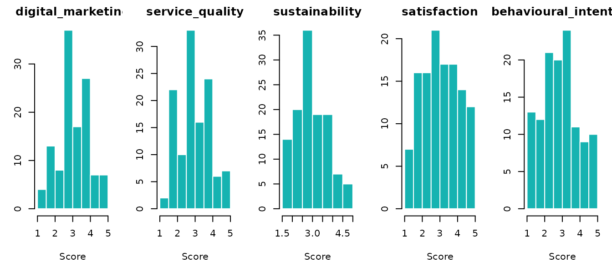
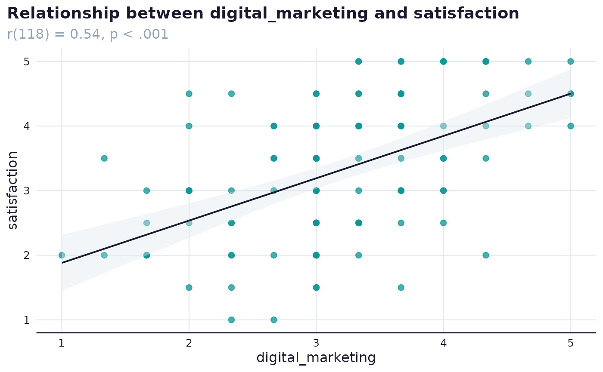

Analysing survey responses: running the plan
Source:vignettes/analysing-survey-responses.Rmd
analysing-survey-responses.RmdThe analysis in surveyframe is driven by the plan stored in the
instrument. Once responses are imported, scored, and checked,
run_analysis_plan() runs every research question in one
pass and returns results formatted for reporting.
The worked-study vignette uses a published study whose data is private. This vignette uses the bundled tourism demo, a synthetic dataset shaped around the same digital marketing and tourism constructs, so the analysis runs end to end without internet access or private data.
Load the demo
demo <- sframe_demo_data()
instr <- demo$instrument
responses <- demo$responses
dim(responses)
#> [1] 120 18Import responses
Response data uses instrument item IDs as column names. Metadata
columns are declared explicitly. Use strict = TRUE to keep
only known columns.
responses <- read_responses(
demo$responses_path,
instr,
respondent_id = "respondent_id",
submitted_at = "submitted_at",
meta_cols = "started_at",
strict = TRUE
)
dim(responses)
#> [1] 120 18Missing data and quality
mr <- missing_data_report(responses, instr)
kable(mr$item_missing, digits = 2,
col.names = c("Variable", "Missing (n)", "Missing (%)", "Valid (n)"),
caption = "Item-level missingness")| Variable | Missing (n) | Missing (%) | Valid (n) | |
|---|---|---|---|---|
| visit_type | visit_type | 0 | 0 | 120 |
| dm_1 | dm_1 | 0 | 0 | 120 |
| dm_2 | dm_2 | 0 | 0 | 120 |
| dm_3 | dm_3 | 0 | 0 | 120 |
| sq_1 | sq_1 | 0 | 0 | 120 |
| sq_2 | sq_2 | 0 | 0 | 120 |
| sq_3 | sq_3 | 0 | 0 | 120 |
| sus_1 | sus_1 | 0 | 0 | 120 |
| sus_2 | sus_2 | 0 | 0 | 120 |
| sat_1 | sat_1 | 0 | 0 | 120 |
| sat_2 | sat_2 | 0 | 0 | 120 |
| bi_1 | bi_1 | 0 | 0 | 120 |
| bi_2 | bi_2 | 0 | 0 | 120 |
| attention | attention | 0 | 0 | 120 |
| comments | comments | 0 | 0 | 120 |
qr <- quality_report(
responses, instr,
respondent_id = "respondent_id",
submitted_at = "submitted_at",
started_at = "started_at"
)
quality_summary <- data.frame(
Metric = c("Respondents", "Items", "Flagged for review", "Flag rate"),
Value = c(qr$summary$n_respondents, qr$summary$n_items, qr$summary$n_flagged,
sprintf("%.1f%%", 100 * qr$summary$flag_rate)),
stringsAsFactors = FALSE
)
kable(quality_summary, align = c("l", "r"), caption = "Quality screening summary")| Metric | Value |
|---|---|
| Respondents | 120 |
| Items | 15 |
| Flagged for review | 109 |
| Flag rate | 90.8% |
Score scales
run_analysis_plan() scores the scales for you, but
scoring once up front lets you inspect the construct scores and run the
assumption checks below.
scored <- score_scales(responses, instr, keep_items = TRUE, keep_meta = TRUE)
scale_ids <- vapply(instr$scales, function(x) x$id, character(1))
score_cols <- intersect(scale_ids, names(scored))
kable(head(scored[, score_cols, drop = FALSE]), digits = 2,
caption = "Scale scores, first respondents")| digital_marketing | service_quality | sustainability | satisfaction | behavioural_intention |
|---|---|---|---|---|
| 2.67 | 3.67 | 5.0 | 3.5 | 4.5 |
| 3.00 | 2.67 | 3.0 | 1.5 | 2.5 |
| 4.67 | 3.33 | 3.5 | 4.5 | 2.5 |
| 4.33 | 4.00 | 5.0 | 4.5 | 5.0 |
| 3.00 | 3.67 | 4.0 | 3.0 | 3.5 |
| 3.67 | 3.67 | 2.5 | 3.5 | 3.0 |
The scale-score distributions show the shape of each construct before the plan runs.
op <- par(mfrow = c(1, length(score_cols)), mar = c(4, 3, 2, 1))
for (s in score_cols) {
v <- scored[[s]]; v <- v[is.finite(v)]
hist(v, col = "#16B3B1", border = "white", main = s,
xlab = "Score", ylab = "")
}
par(op)Check assumptions before the plan
assumption_report() reports the checks a technique
relies on, such as residual normality, variance inflation, and influence
for a regression.
assumption_report(
scored,
predictors = c("digital_marketing", "service_quality", "sustainability"),
outcome = "satisfaction"
)
#> $method
#> [1] "assumptions"
#>
#> $normality
#> data frame with 0 columns and 0 rows
#>
#> $homogeneity
#> data frame with 0 columns and 0 rows
#>
#> $regression
#> $regression$n
#> [1] 120
#>
#> $regression$residual_shapiro_w
#> [1] 0.9941063
#>
#> $regression$residual_shapiro_p
#> [1] 0.8980753
#>
#> $regression$vif
#> digital_marketing service_quality sustainability
#> 1.212656 1.200070 1.012163
#>
#> $regression$cooks_distance
#> 1 2 3 4 5 6
#> 1.184326e-04 9.147336e-03 1.482864e-03 3.583748e-07 2.883541e-03 1.731349e-04
#> 7 8 9 10 11 12
#> 1.323697e-02 4.460344e-03 4.542716e-05 4.287879e-02 2.143130e-02 1.509419e-03
#> 13 14 15 16 17 18
#> 5.088239e-02 5.722577e-03 2.174172e-07 1.127457e-02 8.743696e-03 2.593670e-03
#> 19 20 21 22 23 24
#> 7.553824e-03 2.109049e-02 1.932134e-05 2.370723e-03 3.851322e-04 5.461064e-03
#> 25 26 27 28 29 30
#> 1.872377e-04 4.489098e-07 1.706497e-02 2.752537e-06 1.434770e-04 3.195816e-03
#> 31 32 33 34 35 36
#> 6.905977e-02 1.536396e-02 1.260801e-02 1.534755e-03 1.380360e-02 6.848461e-03
#> 37 38 39 40 41 42
#> 1.700720e-06 3.793174e-04 2.134337e-03 2.287672e-02 1.001287e-02 4.071700e-03
#> 43 44 45 46 47 48
#> 5.471299e-03 5.270891e-02 3.433051e-02 2.975180e-03 3.167244e-03 9.174703e-04
#> 49 50 51 52 53 54
#> 1.170983e-02 8.648779e-04 1.116591e-03 8.230930e-03 1.381027e-02 3.504105e-02
#> 55 56 57 58 59 60
#> 1.571502e-04 2.905749e-03 1.402942e-03 5.808575e-03 2.019476e-03 6.948885e-06
#> 61 62 63 64 65 66
#> 1.170618e-03 3.652109e-03 2.922443e-02 9.678057e-03 3.620026e-06 3.218468e-03
#> 67 68 69 70 71 72
#> 1.378174e-03 5.716292e-03 3.730149e-03 9.087202e-03 8.357802e-03 1.187750e-02
#> 73 74 75 76 77 78
#> 2.430428e-02 3.348263e-04 9.538221e-03 1.257656e-03 1.433252e-03 1.356868e-03
#> 79 80 81 82 83 84
#> 2.563597e-05 1.801658e-03 1.835160e-03 5.784606e-04 2.366539e-02 8.884675e-04
#> 85 86 87 88 89 90
#> 3.063566e-04 9.322376e-03 1.300065e-02 5.103375e-03 6.710071e-04 3.902158e-03
#> 91 92 93 94 95 96
#> 3.851322e-04 3.045158e-03 4.482863e-04 3.504325e-03 3.537797e-03 4.644052e-04
#> 97 98 99 100 101 102
#> 1.386934e-02 4.444185e-03 5.864202e-03 9.236185e-03 2.563387e-02 3.445601e-04
#> 103 104 105 106 107 108
#> 1.467024e-03 1.170618e-03 9.051071e-04 7.373574e-03 2.295924e-05 6.910949e-04
#> 109 110 111 112 113 114
#> 3.504325e-03 2.274586e-04 9.266580e-05 4.857092e-03 4.700977e-08 2.921484e-03
#> 115 116 117 118 119 120
#> 4.090240e-03 1.105467e-02 7.365409e-04 1.938023e-02 1.012910e-03 1.535916e-02
#>
#> $regression$standardised_residuals
#> 1 2 3 4 5 6
#> -0.082923698 -1.870645918 0.395846500 0.004591293 -0.692174489 -0.185004873
#> 7 8 9 10 11 12
#> 1.084968504 0.780147050 0.110776991 -2.638742712 -1.795997774 0.319306483
#> 13 14 15 16 17 18
#> 1.954971640 -1.219815183 0.004191993 1.118225981 1.039309006 0.527129425
#> 19 20 21 22 23 24
#> -0.961835047 0.980099373 0.063225377 0.551354644 0.278271787 -0.647978136
#> 25 26 27 28 29 30
#> 0.227581315 0.004986299 -1.172216599 0.021868776 -0.095706217 -0.782623908
#> 31 32 33 34 35 36
#> -2.309384417 -1.374470793 0.932880267 -0.690640105 1.255066667 0.671314169
#> 37 38 39 40 41 42
#> 0.012570683 0.352662125 0.374079633 1.867781077 -1.228052989 0.606343018
#> 43 44 45 46 47 48
#> -0.617848955 -1.662835019 2.074446939 0.978590982 -0.793286443 0.252351509
#> 49 50 51 52 53 54
#> 1.156356561 -0.449473176 -0.363323806 1.152172372 -1.440809735 -1.866773520
#> 55 56 57 58 59 60
#> 0.189559954 -0.858506945 -0.309992596 -1.198889104 0.696726010 -0.035497078
#> 61 62 63 64 65 66
#> -0.594649744 0.646085118 1.892162918 1.346958028 0.012140769 -1.050312804
#> 67 68 69 70 71 72
#> 0.598618566 -1.508218399 -0.521321175 -0.874142231 1.497519709 1.032511438
#> 73 74 75 76 77 78
#> 2.208163710 0.178475846 1.021361391 0.616360158 -0.448239907 -0.298894184
#> 79 80 81 82 83 84
#> -0.041513884 0.484623799 -0.711839662 -0.445277725 2.271897566 0.424028147
#> 85 86 87 88 89 90
#> 0.236369610 1.923468863 -1.537113657 -0.910885755 0.287247717 0.885761213
#> 91 92 93 94 95 96
#> 0.278271787 -1.099326747 -0.299846917 -0.670336465 1.075297214 0.241274096
#> 97 98 99 100 101 102
#> 1.521915286 0.863717913 0.560137775 -0.839407809 -1.485896784 -0.173199125
#> 103 104 105 106 107 108
#> -0.230361700 -0.594649744 0.499913855 -1.172602644 -0.046456880 -0.397268813
#> 109 110 111 112 113 114
#> -0.670336465 0.181786019 -0.202323795 -0.825310891 0.001891811 -0.577856052
#> 115 116 117 118 119 120
#> -0.520419080 1.827370061 -0.348396466 -1.215115771 0.250475472 0.752951062
#>
#>
#> $expected_counts
#> NULL
#>
#> $apa
#> [1] "Assumption checks were computed."
#>
#> $prompt
#> [1] "Report assumption checks before interpreting inferential models, especially sparse cells, non-normal residuals, and high VIF values."
#>
#> attr(,"class")
#> [1] "sframe_assumption_report"Define the plan
Each block binds a research question to a technique and to the
variables that fill each role. A correlation expects x and
y. A regression expects predictors and a
dependent variable. A group comparison expects a
group and an outcome.
instr$analysis_plan <- list(
list(id = "RQ1",
research_question = "Is digital marketing perception associated with satisfaction?",
family = "association", method = "correlation_pearson",
roles = list(x = "digital_marketing", y = "satisfaction"),
options = list(alpha = 0.05)),
list(id = "RQ2",
research_question = "Do the three perception scales predict satisfaction?",
family = "regression", method = "regression_linear",
roles = list(predictors = c("digital_marketing", "service_quality", "sustainability"),
dependent = "satisfaction"),
options = list(alpha = 0.05)),
list(id = "RQ3",
research_question = "Do first-time and repeat visitors differ in behavioural intention?",
family = "group_comparison", method = "mann_whitney",
roles = list(group = "visit_type", outcome = "behavioural_intention"),
options = list(alpha = 0.05))
)Run the plan
results <- run_analysis_plan(responses, instr)
results_table(results)| RQ | Research question | Method | Result (APA) | Effect |
|---|---|---|---|---|
| RQ1 | Is digital marketing perception associated with satisfaction? | pearson | r(118) = 0.54, p < .001 | large |
| RQ2 | Do the three perception scales predict satisfaction? | R² = 0.383, F(3, 116) = 23.95, p < .001 | ||
| RQ3 | Do first-time and repeat visitors differ in behavioural intention? | U = 1576, z = -0.98, p = 0.327, r = 0.09 | negligible |
Pass plots = TRUE to attach a brand-styled
ggplot2 chart to each result that supports one
(descriptive, correlation, chi-square, and regression blocks). The chart
sits in $plot alongside the existing $table
and $apa elements.
results_plots <- run_analysis_plan(responses, instr, plots = TRUE)
results_plots[[1]]$plot
Read a single result
Each result holds more than the printed line. It carries the APA statistic, the effect-size label where the technique reports one, a writing prompt, and the references that support the technique.
rq1 <- results[[1]]
rq1$apa
#> [1] "r(118) = 0.54, p < .001"
rq1$effect_label
#> [1] "large"
rq1$prompt
#> [1] "There was a positive, large significant correlation between digital_marketing and satisfaction, r(118) = 0.54, p < .001. Explain what this means for your research question."
unlist(rq1$citations)
#> field_2018
#> "Field, A. (2018). *Discovering statistics using IBM SPSS statistics* (5th ed.). SAGE."
#> cohen_1988
#> "Cohen, J. (1988). *Statistical power analysis for the behavioral sciences* (2nd ed.). Lawrence Erlbaum."
#> r_core
#> "R Core Team. (2026). *R: A language and environment for statistical computing*. R Foundation for Statistical Computing."
#> surveyframe
#> "Sharafuddin, M. A. (2026). *surveyframe: Survey Instrument Workflows* (Version 0.3.3) [Computer software]. https://github.com/MohammedAliSharafuddin/surveyframe"Render the results report
render_results() writes a self-contained HTML report
with one section per research question, each holding the APA result, the
writing prompt, a space for the interpretation, and a reference list
compiled from the techniques used.
render_results(results, instr, output_file = "results.html", citation_format = "apa")In SurveyStudio
SurveyStudio runs the same plan. Open it on the analysis screen, upload the responses, and the Analysis Plan screen runs the saved plan and shows a table of each question with its method and APA result. The full report is produced on the Export screen.
launch_studio(
instrument = instr,
responses = responses,
screen = "analysis",
launch.browser = FALSE
)